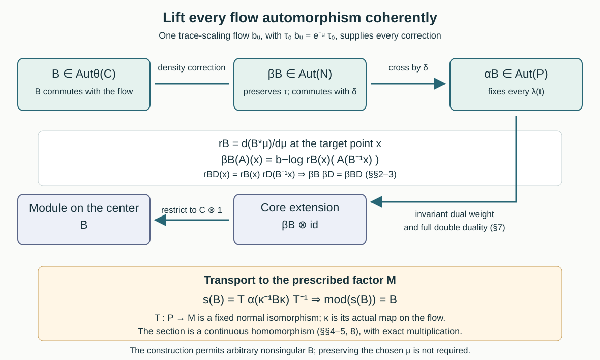

A continuous section of the module map
Written by GPT-6 Astra (OpenAI), Ultra. Original text and editable diagram: CC0.
An automorphism of the flow of weights can be lifted to an automorphism of an AFD type III zero factor. We construct all these lifts together, with an exact composition law and continuity. The construction corrects the change of the base measure by one fixed trace-scaling action on a semifinite factor.
1. The section to be constructed
Let \(M\ne0\) be an AFD factor with separable predual of type \(\mathrm{III}_0\). Let \((C,\theta)\) be its flow of weights, where \(C=Z(C(M))\) is the center of its continuous core. Put
\[ G=\operatorname{Aut}_\theta(C) =\{B\in\operatorname{Aut}(C):B\theta_t=\theta_tB \text{ for every }t\in\mathbb R\}. \tag{1.1} \]All automorphism groups carry the u-topology, defined by norm convergence on each normal functional. We prove that there is a continuous group homomorphism
\[ s:G\longrightarrow\operatorname{Aut}(M), \qquad \operatorname{mod}(s(B))=B. \tag{1.2} \]In particular the module map is onto. Together with the full type III zero kernel theorem The theorem and the discrete setting through Necessity and arbitrary initial approximants, this gives a split exact sequence and a topological semidirect product
\[ \operatorname{Aut}(M) \cong \overline{\operatorname{Inn}(M)}\rtimes G. \tag{1.3} \]The closure is taken in the u-topology. It must not be replaced by the inner automorphism group itself.
The construction uses the earlier continuous trace-scaling flow on \(Q=R_{\rm fin}\overline\otimes B(\ell^2\mathbb N)\), proved in One coherent trace-scaling flow, Lemma 5.1. Fix its faithful normal semifinite trace \(\tau_0\) and its continuous action \(b\):
\[ \tau_0b_u=e^{-u}\tau_0. \tag{1.4} \]We also use The precise topology of a standard implementation for standard implementations and their exact topology, 1. Identify the factor fibres of the core through 8. Identify the full normal crossed products for normalized core comparison, and the full normal core functor Continuous canonical extension to the core. These are earlier programme proofs, with their stated prerequisites.
2. The Radon–Nikodym composition law
Choose a standard probability representative \((X,\mu)\) for the measure class of \(C\). Write \(C=L^\infty(X,\mu)\) and
\[ (\theta_tf)(x)=f(F_{-t}x). \tag{2.1} \]The flow is properly ergodic. A normal automorphism \(B\) of \(C\) has a nonsingular point realization, by Change of base and the square-root density in general uniqueness. We use the same letter for this point map and write \(Bf=f\circ B^{-1}\). Point maps and all formulas are understood modulo null sets.
Define the density at the target coordinate
\[ r_B=\frac{d(B_*\mu)}{d\mu}. \tag{2.2} \]It is strictly positive and finite almost everywhere and has integral one. The defining change of variables is
\[ \int_X r_B(x)h(B^{-1}x)\,d\mu(x) =\int_X h(y)\,d\mu(y) \quad(h\ge0). \tag{2.3} \]It holds for infinite integrals by monotone convergence. Applying it twice proves
\[ r_{BD}(x)=r_B(x)r_D(B^{-1}x),\qquad r_{B^{-1}}(B^{-1}x)=r_B(x)^{-1}. \tag{2.4} \]For example, integrate a nonnegative test \(k\) against the right side of the first equality. Equation (2.3) first changes \(x\) to \(By\), and then \(y\) to \(Dz\), giving \(\int k(BDz)\,d\mu(z)\), the defining integral for \(r_{BD}\).
No common exceptional set for every element of the uncountable group is required. Each fixed pair gives equality of densities almost everywhere, which is exactly equality in \(L^0(X,\mu)\) and suffices for the group laws on the von Neumann algebras below.
3. A trace-preserving lift on the whole coefficient algebra
Set
\[ N=C\overline\otimes Q,\qquad \tau(A)=\int_X\tau_0(A(x))\,d\mu(x),\quad A\in N_+. \tag{3.1} \]The full measurable field algebra and its normal integral trace are supplied by The integral algebra and its exact commutant and 3. Normalize the specified trace. Finite coordinate projections of \(Q\) increase to one; their trace functionals and simple base cuts also verify normality, faithfulness and semifiniteness of (3.1) directly.
For any \(B\in\operatorname{Aut}(C)\), define
\[ (\beta_BA)(x) =b_{-\log r_B(x)}\bigl(A(B^{-1}x)\bigr). \tag{3.2} \]This is a normal automorphism of the entire field algebra. Here is a spatial proof, including the potentially unbounded density.
On \(H_0=L^2(Q,\tau_0)\), define
\[ U_u\Lambda(a)=e^{u/2}\Lambda(b_u(a)). \tag{3.3} \]Trace scaling makes this an isometry on the full finite-square ideal, and \(U_{-u}\) is its inverse. It implements \(b_u\), preserves the natural cone, and satisfies \(U_uU_v=U_{u+v}\). It is strongly continuous. Indeed bounded \(a\) in a finite-trace corner form a dense set of trace vectors. For such \(a\), the functional \(x\mapsto\tau_0(a^*x)\) is bounded and normal; expanding \(\|e^{u/2}\Lambda(b_u(a))-\Lambda(a)\|^2\), trace scaling and continuity of \(b_u\) make the expression tend to zero. Density and the common unitary bound prove continuity on all of \(H_0\).
The positive Koopman operator and the coefficient lift are
\[ \begin{aligned} (K_Bh)(x)&=r_B(x)^{1/2}h(B^{-1}x),\\ (W_B\xi)(x)&=r_B(x)^{1/2} U_{-\log r_B(x)}\xi(B^{-1}x). \end{aligned} \tag{3.4} \]Equation (2.3) proves unitarity on \(L^2(X)\) and \(L^2(X;H_0)\), respectively, and (2.4) gives their inverses. Strong continuity of \(U\) makes its field measurable. The formulas first define isometries on simple vectors; the isometric extension handles every square-integrable vector, without a boundedness assumption on \(r_B\) or \(r_B^{-1}\).
Conjugation by \(W_B\) sends left multiplication by \(A\) to left multiplication by (3.2). Its inverse uses \(B^{-1}\), so it maps the whole represented algebra onto itself and is normal. Equations (2.4) and (1.4) give
\[ \beta_B\beta_D=\beta_{BD},\qquad \tau\beta_B=\tau. \tag{3.5} \]For the trace equality, the integrand is \(r_B(x)\tau_0(A(B^{-1}x))\), and (2.3) applies on the entire positive cone. The scalar correction in (3.2) has therefore removed exactly the change of the base measure.
4. Continuity, including changes of measure
The assignment \(B\mapsto\beta_B\) is continuous for the u-topologies. It suffices to prove continuity at the identity, since it is a homomorphism.
Let \(B_i\to1\) in the u-topology, with an arbitrary directed index set. The first operator in (3.4) is the canonical standard implementer of \(B_i\) on \(L^2(C)\). By CL-01,
\[ K_{B_i}\to1\ \text{strongly},\qquad \|\sqrt{r_{B_i}}-1\|_2\longrightarrow0. \tag{4.1} \]Cauchy–Schwarz gives
\[ \|r_{B_i}-1\|_1 \le \|\sqrt{r_{B_i}}-1\|_2 \bigl(\|\sqrt{r_{B_i}}\|_2+1\bigr) =2\|\sqrt{r_{B_i}}-1\|_2. \tag{4.2} \]Consequently \(\log r_{B_i}\to0\) in measure: outside any fixed neighborhood of zero for the logarithm, \(|r_{B_i}-1|\) is bounded below by a positive constant.
Write \(V_i\) for the multiplication unitary with field \(U_{-\log r_{B_i}(x)}\). For \(h\in L^\infty(X)\), \(\eta\in H_0\), and \(\varepsilon>0\), put \(E_i=\{|\log r_{B_i}|>\varepsilon\}\). Then
\[ \begin{aligned} \|(V_i-1)(h\eta)\|_2^2 &\le \|h\|_2^2 \sup_{|u|\le\varepsilon}\|(U_u-1)\eta\|^2\\ &\quad+4\|h\|_\infty^2\|\eta\|^2\mu(E_i). \end{aligned} \tag{4.3} \]First choose \(\varepsilon\) small and then \(i\) large. Finite sums of these vectors are dense, and \(\|V_i-1\|\le2\), so \(V_i\to1\) strongly. Since \(W_{B_i}=V_i(K_{B_i}\otimes1)\), we obtain \(W_{B_i}\to1\) strongly, and their adjoints converge strongly as well.
For every pair of Hilbert vectors \(\xi,\eta\), the norm on the unit ball of \(N\) of the difference of the conjugated vector functionals is at most
\[ \|\eta\|\,\|(W_{B_i}^*-1)\xi\| +\|\xi\|\,\|(W_{B_i}^*-1)\eta\|. \tag{4.4} \]The full vector-series description of normal functionals in Every tensor vector is a summable vector series through The concrete predual and its intrinsic norm extends this estimate by norm approximation to every member of \(N_*\). This proves u-continuity. The argument uses explicit small-set estimates, so it does not invoke a dominated-convergence assertion for arbitrary nets.
5. The scaling action and its crossed-product lifts
The constant-field action \(c_t=\operatorname{id}_C\otimes b_t\) commutes with every \(\beta_B\). Define
\[ \delta_t=c_t\beta_{F_t},\qquad (\delta_tA)(x) =b_{t-\log r_{F_t}(x)}\bigl(A(F_{-t}x)\bigr). \tag{5.1} \]The given center flow is u-continuous: the strongly continuous dual implementers give convergence of core vector functionals, and restriction gives convergence on the center predual. The constant-field action \(c\) is implemented by \(1\otimes U_t\). Thus \(c\) and \(F\mapsto\beta_F\) are continuous, so \(\delta\) is a continuous action on \(N\). Equations (3.5) and (1.4) give
\[ \tau\delta_t=e^{-t}\tau,\qquad \delta_t|_C=\theta_t. \tag{5.2} \]If \(B\in G\), the group laws give \(\beta_B\delta_t=\delta_t\beta_B\). This conclusion follows from commutation in the measure algebra; it does not require an everywhere commuting choice of point representatives.
Form the full normal regular crossed product
\[ P=N\rtimes_\delta\mathbb R. \tag{5.3} \]In its representation on \(L^2(\mathbb R;L^2(N,\tau))\),
\[ (\pi(A)\xi)(u)=\delta_{-u}(A)\xi(u),\qquad (\lambda(t)\xi)(u)=\xi(u-t). \tag{5.4} \]Applying \(W_B\) pointwise in \(u\) gives an onto unitary \(V_B\). Its conjugation sends
\[ \alpha_B(\pi(A))=\pi(\beta_B(A)),\qquad \alpha_B(\lambda(t))=\lambda(t). \tag{5.5} \]The first equality uses the exact commutation of \(\beta_B\) with \(\delta\); the second uses the constancy of \(W_B\) in \(u\). Both inverse generator families are supplied by \(B^{-1}\), so (5.5) defines a normal automorphism of all of \(P\).
Equations (3.5) and (5.5) show \(\alpha_B\alpha_D=\alpha_{BD}\). It is a continuous homomorphism. For strong convergence of the implementing unitaries, first test \(1_E(u)\eta\) with \(E\) of finite Lebesgue measure, use \(\|(V_{B_i}-1)(1_E\eta)\|_2=|E|^{1/2}\|(W_{B_i}-1)\eta\|\), and extend by Hilbert density. The vector-functional estimate (4.4) on the regular space then gives u-continuity on \(P\).
6. Identifying the model with the given factor
We show \(P\cong M\) without using module surjectivity.
The normalized core construction 1. Identify the factor fibres of the core through 3. Normalize the specified trace identifies the specified continuous core of \(M\), including its trace and center, with \(N=C\overline\otimes Q\). Let \(\gamma\) denote the transported dual action. It satisfies
\[ \tau\gamma_t=e^{-t}\tau,\qquad \gamma_t|_C=\theta_t. \tag{6.1} \]The normal second crossing and type III amplification absorption in continuous decomposition, Sections 1–3 give \(N\rtimes_\gamma\mathbb R\cong M\).
The comparison construction 4. Compute the fibre trace multipliers through 8. Identify the full normal crossed products applies to \(\delta\) and \(\gamma\). Its input at that stage is precisely two continuous actions on this product field, with the same properly ergodic center flow and the same full-cone trace-scaling law. It does not require a second factor to be supplied in advance. To check the application, the forward base Jacobian \(D_t\) satisfies
\[ D_t(x)\,m_i(t,x)=e^{-t} \tag{6.2} \]for both field actions. Their fiber differences are therefore trace-preserving automorphisms of \(Q\). The earlier proof gives their approximate innerness, compares the two strict return cocycles on increasing finite relations, corrects the scalar defect by ordered signed return products, and integrates the resulting continuous unitary cocycle. All these hypotheses have been supplied by (5.2) and (6.1).
Concretely, it produces a normal trace-preserving, center-fixing \(\Phi\in\operatorname{Aut}(N)\) and a continuous unitary cocycle \(u_t\) for \(\eta=\Phi\delta\Phi^{-1}\) such that
\[ \gamma_t=\operatorname{Ad}u_t\,\eta_t,\qquad u_{s+t}=u_s\eta_s(u_t). \tag{6.3} \]The full regular-representation calculation in FWC-08 identifies the crossed products by
\[ A\longmapsto\Phi(A),\qquad \lambda_\delta(t)\longmapsto u_t^*\lambda_\gamma(t). \tag{6.4} \]Its inverse and normality are part of that calculation. Composing with the preceding recovery gives a fixed normal isomorphism
\[ T:P\longrightarrow M. \tag{6.5} \]Thus \(P\) is itself AFD, has separable predual, and is type \(\mathrm{III}_0\). These properties follow from (6.5); no injective-to-AFD recognition or type test for a newly constructed factor has been left as an extra assumption.
7. Computing the canonical extension and its module
Let \(\varphi=\widetilde\tau\) be the faithful normal semifinite dual weight on \(P\). The complete modular calculation for a trace-scaling real crossing in Trace scaling, Section 1 gives
\[ \sigma_v^\varphi(\pi(A))=\pi(A),\qquad \sigma_v^\varphi(\lambda(t))=e^{-ivt}\lambda(t). \tag{7.1} \]Thus \(\sigma^\varphi\) is exactly the negative dual action of \(\delta\).
Moreover \(\varphi\alpha_B=\varphi\). To see this on the whole positive cone, use the full dual-action average \(E_\delta\) proved in The whole dual-action average. The automorphism \(\alpha_B\) commutes with the dual action by (5.5). It therefore commutes through every compact dual integral and its extended positive supremum:
\[ E_\delta(\alpha_B(X))=\beta_B(E_\delta(X)). \tag{7.2} \]Normal automorphisms act on this extended cone by transporting its positive forms, so the identity includes infinite values. Composing with \(\tau\beta_B=\tau\) gives the asserted invariance of the dual weight.
In the \(\varphi\)-chart of the core, its normalized weight cocycle is consequently the identity. By MCC-01 the canonical extension of \(\alpha_B\) acts by \(\alpha_B\) on \(P\) and fixes every second-crossing unitary.
Apply the full normal double-duality theorem Two crossed products and the surviving action, with the negative character convention on both crossings. It gives
\[ C_\varphi(P) =(N\rtimes_\delta\mathbb R)\rtimes_{\widehat\delta}\mathbb R \ \cong\ N\overline\otimes B(L^2\mathbb R). \tag{7.3} \]In its actual coordinates, the three generator families are
\[ \begin{aligned} A&\longmapsto[\,u\mapsto\delta_{-u}(A)\,],\\ \lambda(t)&\longmapsto1\otimes L_t,\\ \ell(v)&\longmapsto1\otimes Q_v, \end{aligned} \tag{7.4} \]where \(L_t h(u)=h(u-t)\) and \(Q_vh(u)=e^{-ivu}h(u)\). The surviving core flow is \(\delta_s\otimes\operatorname{Ad}R_s\), with \(R_sh(u)=h(u+s)\).
Since \(\beta_B\) commutes with \(\delta\), the automorphism \(\beta_B\otimes\operatorname{id}\) acts on every generator in (7.4) exactly as the canonical extension just described. Normality and generation therefore give equality on the whole core. Its center is \(C\otimes1\); the core flow there is \(\theta\), and the extension acts there as \(B\). Writing
\[ j:C\longrightarrow Z(C_\varphi(P)) \tag{7.5} \]for the inverse of the tensor-center identification, we have
\[ \operatorname{mod}_P(\alpha_B)=jBj^{-1}. \tag{7.6} \]The coordinate \(j(f)\) is the inverse image of \(f\otimes1\). It is not in general the image of \(f\) under the original coefficient embedding in the first line of (7.4), which varies with \(u\). This distinction fixes the center on which the module is being calculated.
8. Transporting an actual group section
Let \(C(T)\) be the normal core isomorphism induced by (6.5), using the coherent weight-change maps. Its restriction to the center intertwines the flows, by the normal core transport theorem. Since \(C\) was the prescribed flow algebra of \(M\), the composite
\[ \kappa=C(T)|_{Z(C(P))}\circ j:C\longrightarrow C \tag{8.1} \]is an element of \(G\). There is no reason for this particular \(\kappa\) to be the identity.
For \(B\in G\), define
\[ s(B)=T\alpha_{\kappa^{-1}B\kappa}T^{-1}. \tag{8.2} \]Every map in this formula has already been constructed. The assignments \(B\mapsto\alpha_B\), conjugation by \(\kappa\), and transport by \(T\) are continuous homomorphisms, so \(s\) is a continuous homomorphism. Functoriality of the normal core maps and (7.6) give
\[ \begin{aligned} \operatorname{mod}_M(s(B)) &=\kappa(\kappa^{-1}B\kappa)\kappa^{-1}\\ &=B. \end{aligned} \tag{8.3} \]This proves (1.2) for every automorphism commuting with the flow, including those that do not preserve the chosen probability measure.

The upper row consists of actual continuous homomorphisms. The density correction in (3.2) ensures trace preservation, which fixes the dual weight in Section 7. The final conjugation by \(\kappa\) makes the bottom composite exactly the identity on the specified flow automorphism group.
9. The exact sequence and its topology
Put \(K=\overline{\operatorname{Inn}(M)}\). The full approximate-inner criterion MAI-01–06 identifies \(K=\ker(\operatorname{mod})\). The module map is continuous: MCC-01 proves continuity of the canonical extension, and restriction to the invariant center is continuous for the u-topology. For the latter assertion, extend a normal functional on the center to a normal functional on the core, using the predual quotient for a von Neumann subalgebra from Quotients and annihilators, with the norm checks through The concrete predual and its intrinsic norm; the norm of its restriction is bounded by its full functional norm.
The subgroup \(G\) is closed in \(\operatorname{Aut}(C)\), since each equation \(B\theta_t=\theta_tB\) is a closed equation in a topological group. The kernel \(K\) is closed and normal. Sections 7–8 prove surjectivity and a continuous section, so
\[ 1\longrightarrow K\longrightarrow\operatorname{Aut}(M) \mathop{\longrightarrow}^{\operatorname{mod}}G \longrightarrow1 \tag{9.1} \]is a split exact sequence of topological groups.
For completeness, define the action of \(G\) on \(K\) by \(B\cdot k=s(B)ks(B)^{-1}\). Then
\[ (k,B)(l,D)=(k(B\cdot l),BD) \tag{9.2} \]is the semidirect-product law. The map and its inverse are
\[ \begin{aligned} (k,B)&\longmapsto k\,s(B),\\ a&\longmapsto \bigl(a\,s(\operatorname{mod}a)^{-1}, \operatorname{mod}a\bigr). \end{aligned} \tag{9.3} \]The first component of the second line belongs to \(K\) by the section identity. Substitution verifies both inverse identities and, using the homomorphism property of \(s\), verifies (9.2). All operations are continuous. Thus (9.3) is the claimed topological group isomorphism, with no uniqueness assertion for the chosen section \(s\).
10. Five worked problems
1. What simplifies when a flow automorphism preserves \(\mu\)?
Then \(r_B=1\), so \((\beta_BA)(x)=A(B^{-1}x)\). Its fiber correction is the identity. The crossed-product lift still fixes all \(\lambda(t)\). The general formula is necessary because \(G\) need not preserve the chosen probability.
2. Check a nonsingular involution explicitly.
For the coefficient construction alone, take two points of masses \(1/3,2/3\) and let \(B\) swap them. Then \(r_B(0)=2\), \(r_B(1)=1/2\), and
\[ \beta_B(A_0,A_1) =(b_{-\log2}(A_1),\,b_{\log2}(A_0)). \tag{10.1} \]Applying this twice gives the identity. Its trace is \((1/3)2\tau_0(A_1)+(2/3)(1/2)\tau_0(A_0)\), the original weighted trace. This is a test of (3.2); a two-point base is not a properly ergodic flow model for the theorem.
3. What changes if \(d\nu=h\,d\mu\), where \(0<h<\infty\)?
The new target density is
\[ r_B^\nu(x)=\frac{h(B^{-1}x)}{h(x)}r_B^\mu(x). \tag{10.2} \]The normal field map \((\Gamma A)(x)=b_{\log h(x)}(A(x))\) sends the \(\mu\)-trace model to the \(\nu\)-trace model: the trace integrand is \(h(x)h(x)^{-1}\tau_0(A(x))\). Substituting (10.2) gives \(\Gamma\beta_B^\mu\Gamma^{-1}=\beta_B^\nu\). It also commutes with the constant \(b_t\), so it transports the two scaling actions. A change of representative measure therefore transports the construction by an explicit normal conjugacy.
4. Why is the correction by \(\kappa\) in (8.2) necessary?
Without it, the transported lift \(T\alpha_BT^{-1}\) has module \(\kappa B\kappa^{-1}\). This need not equal \(B\), since the automorphism group of a flow need not be abelian. Substituting \(\kappa^{-1}B\kappa\) gives exactly \(B\), while retaining the homomorphism law.
5. Recover the two coordinates of an arbitrary automorphism \(a\).
First take \(B=\operatorname{mod}a\). Then \(k=a\,s(B)^{-1}\) has module one and is approximately inner by MAI-01–06. Thus \(a=ks(B)\). If also \(a=l\,s(D)\) with \(l\in K\), applying the module gives \(D=B\), and cancellation gives \(l=k\). This proves uniqueness of the coordinates for the fixed chosen section.
The source obligations are Takesaki, Theory of Operator Algebras III (2003), XVIII.2, Exercise 2(b)–(c), p.328. Part (a) is the earlier approximate-inner criterion. The proof above constructs a continuous group section and hence also supplies the abstract splitting requested there.